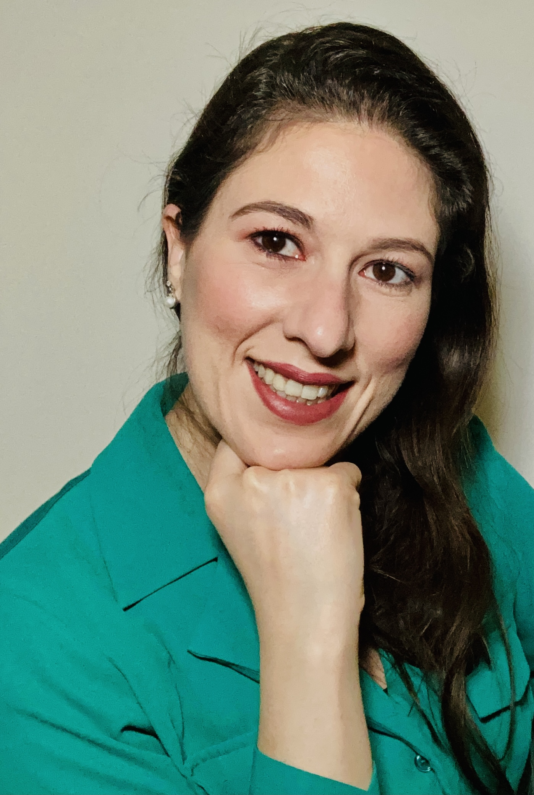
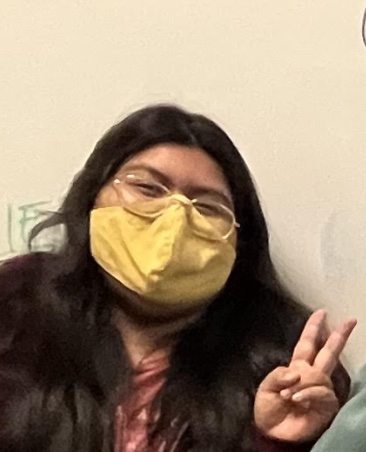

Group Members
Please contact Dr. Stieber by email if you are interested in conducting research in the group.
Group meetings are typically Tuesdays during lunch.
Current Members (click for group pictures)(click for alumni)

Dr. Andressa Antonini Bertolazzo Joined the group in Sept. 2022 as a PLUTO postdoctoral fellow in the STARS program. She is studying crystallography.
Briana Arreaga is a Chemistry major and RISE and LSAMP Fellow. She joined Aug. 2018 and is making Ni catalysts.

Romualda Aquino is a Master's student and joined the group in Oct. 2021. She is making new ligands.

Ethan Chavarin is Chemistry major, RIO fellow, and joined the group in Sept. 2021. He is studying Ni NHC complexes.
Jessica De la Huerta Joined the group in Oct. 2019. She is studying crystallography and nickel nitrosyls.

Nidia Ibarra joined the group in Sept. 2022 with the STARS program, and does crystallography and materials chemistry.

Gaby Lopez is a Chemistry major and joined in Dec. 2022. She is working on CO2 reduction.

Duong Nguyen Joined the group in Apr. 2023. He is working on CO2 reduction.

Isaac Ramirez is a Chemistry major and joined the group in Sept. 2018. He is making Co nitrosyls.
Alyssa Tran Joined the group in Sept. 2022 and is in the STARS program. She is making bis(imidazolium) salts.